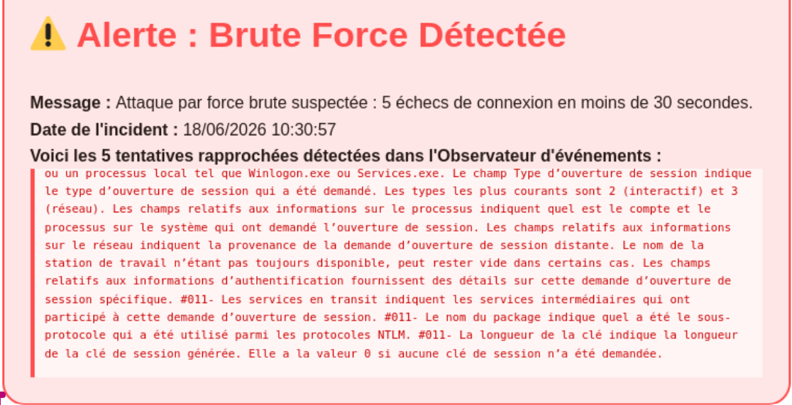
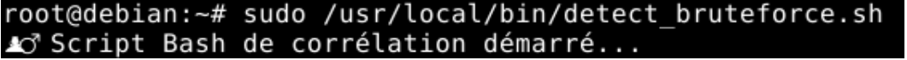

Un système de surveillance en temps réel a été mis en place pour détecter les tentatives d'attaque par force brute sur le serveur Windows. Lorsque 5 échecs de connexion sont détectés en moins de 30 secondes, une alerte est automatiquement générée et affichée sur le site web de la brasserie.
| Composant | Rôle | Machine |
|---|---|---|
| Script PowerShell | Surveille l'Observateur d'événements Windows (ID 4625) | Windows Server |
| Script Bash | Lit le fichier de log et génère le JSON d'alerte | Serveur Linux |
| receiver.php | Reçoit les alertes du Windows Server | Serveur Linux (Apache) |
| Site web | Affiche l'alerte en temps réel | Serveur Linux |
Le système fonctionne en deux étapes :
Ce script tourne en permanence sur le Windows Server et surveille l'Observateur d'événements en temps réel.
$IP_DEBIAN = "192.168.136.54"
$URL_RECEIVER = "http://$IP_DEBIAN/traitement/receiver.php"
$alert_active = $false
while ($true) {
$now = Get-Date
$il_y_a_30_secondes = $now.AddSeconds(-30)
# Cherche les EventID 4625 des 30 dernières secondes
$events = Get-WinEvent -FilterHashtable @{
LogName='Security'; Id=4625; StartTime=$il_y_a_30_secondes
} -ErrorAction SilentlyContinue
if ($events -and $events.Count -ge 5) {
if (-not $alert_active) {
$logs_web = @()
foreach ($e in $events) {
$logs_web += "[$($e.TimeCreated.ToString('HH:mm:ss'))] Connexion refusée (Event 4625)"
}
$body = @{
alerte = $true
message = "Attaque par force brute détectée !"
date = $now.ToString("dd/MM/yyyy HH:mm:ss")
logs = $logs_web
} | ConvertTo-Json -Compress
Invoke-RestMethod -Uri $URL_RECEIVER -Method Post -Body $body -ContentType "application/json"
$alert_active = $true
}
} else {
if ($alert_active) {
$body = @{ alerte = $false; date = $now.ToString("dd/MM/yyyy HH:mm:ss") } | ConvertTo-Json -Compress
Invoke-RestMethod -Uri $URL_RECEIVER -Method Post -Body $body -ContentType "application/json"
$alert_active = $false
}
}
Start-Sleep -Seconds 5
}
Ce script surveille le fichier de log en temps réel et génère le fichier JSON affiché sur le site web.
#!/bin/bash
LOG_FILE="/var/log/windows_failed_logins.log"
JSON_OUTPUT="/var/www/html/assets/alertes/alerte_connexion.json"
# Initialisation — pas d'alerte
echo "{\"alerte\": false, \"date\": \"$(date '+%d/%m/%Y %H:%M:%S')\"}" > "$JSON_OUTPUT"
timestamps=()
log_lines=()
tail -Fn0 "$LOG_FILE" | while read -r line; do
# Ignorer les lignes grep
if [[ "$line" == *"grep"* ]]; then continue; fi
now=$(date +%s)
timestamps+=("$now")
log_lines+=("$line")
# Supprimer les échecs de plus de 30 secondes
while [ ${#timestamps[@]} -gt 0 ] && \
[ $((now - timestamps[0])) -gt 30 ]; do
timestamps=("${timestamps[@]:1}")
log_lines=("${log_lines[@]:1}")
done
# 5 échecs en moins de 30 secondes → alerte
if [ ${#timestamps[@]} -ge 5 ]; then
date_incident=$(date '+%d/%m/%Y %H:%M:%S')
json_logs=""
for l in "${log_lines[@]}"; do
clean_line=$(echo "$l" | sed 's/"/\\"/g' | tr -d '\r\n')
json_logs="$json_logs\"$clean_line\","
done
json_logs="${json_logs%,}"
cat > "$JSON_OUTPUT" << JSONEOF
{
"alerte": true,
"message": "Attaque par force brute suspectée : 5 échecs en moins de 30 secondes.",
"date": "$date_incident",
"logs": [$json_logs]
}
JSONEOF
timestamps=()
log_lines=()
# Réinitialisation après 2 minutes
( sleep 120
echo "{\"alerte\": false, \"date\": \"$(date '+%d/%m/%Y %H:%M:%S')\"}" > "$JSON_OUTPUT"
) &
fi
done
sudo bash /chemin/vers/script_surveillance.sh

Alerte affichée sur le site web lors d'une tentative de force brute détectée

Terminal Linux — Script bash en cours d'exécution et détection d'une alerte
| ID Événement | Signification | Action déclenchée |
|---|---|---|
| 4625 | Échec de connexion (mauvais mot de passe) | Comptage — alerte si ≥ 5 en 30s |
| 4740 | Compte verrouillé | Visible dans eventvwr.msc |
| 4624 | Connexion réussie | Reset du compteur |